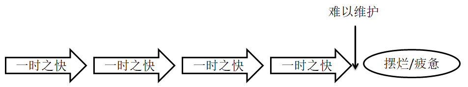
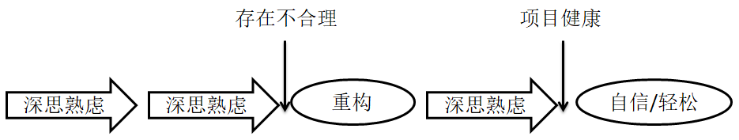
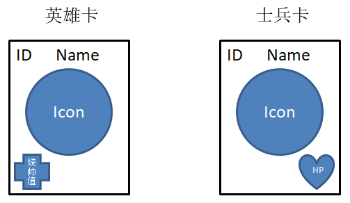
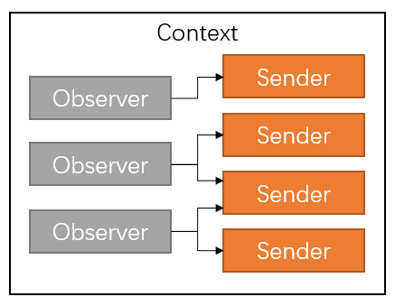
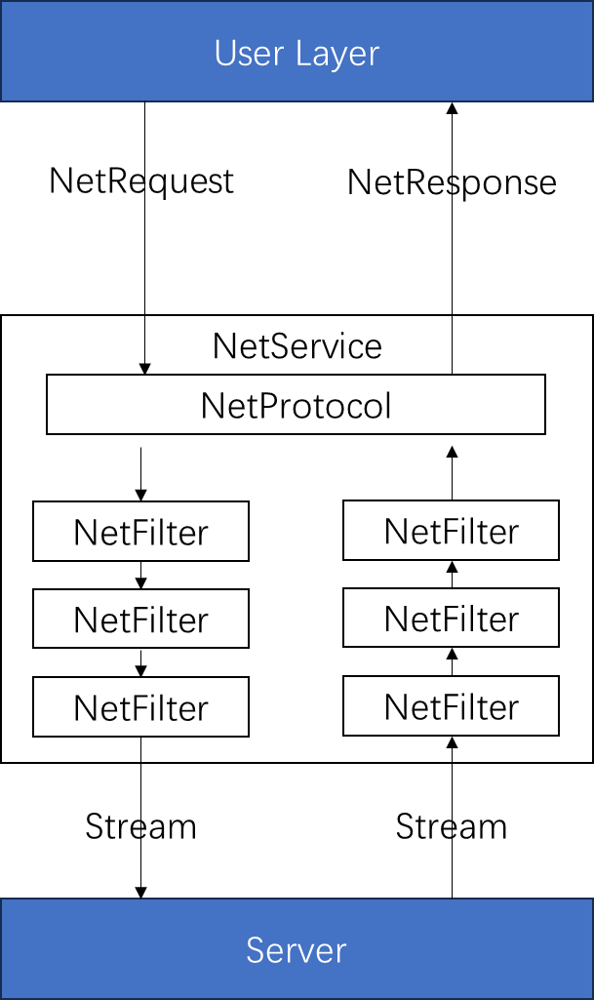
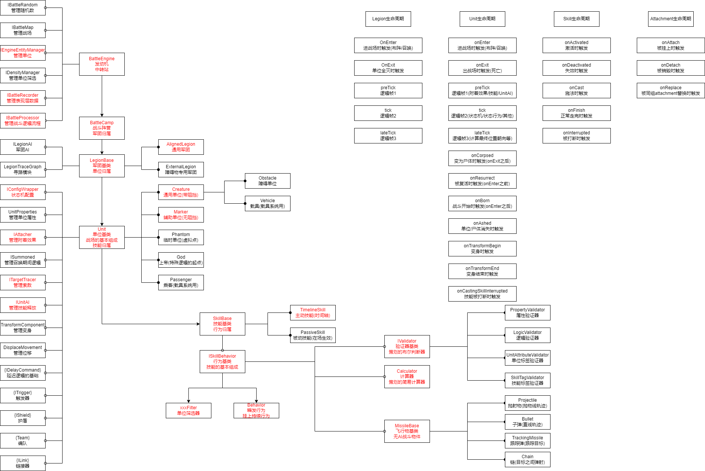

前言
不知道你有没有感受过一个项目难以维护，可能稍微修改一个小地方就会导致另外一个地方的错误，可能一个功能的代码混杂在各种地方，可能想复用一个已经存在的功能却发现里面耦合了一堆其他东西导致无法复用，可能一些对象的生命周期混乱不堪等等。
不管如何，作为一个程序员就要对自己的代码负责，也要对未来负责自己代码的人负责，一味地图一时之快只会让整个工程变得毫无可维护性和扩展性，做功能前需要多思考，拍脑袋写代码任何一个入行的程序员都能做到。
程序设计，往往容易被人忽视的一种能力，却与后期工程的维护成本息息相关，不愿思考，只想着怎么快怎么来，对自己不负责，对工程不负责，最终只会让自己疲惫，让他人疲惫，如图1所示。

图1 -
不思考，喜欢偷懒，喜欢打补丁，最后摆烂干脆甩手不干让接手的人痛苦。
不妨试着多思考一下，多做点所谓的设计，少偷点懒，既能锻炼自己的大局观，还能培养自信。在功能推进的途中发现不合理，及时(如果可以的话，不行就排期)思考如何重构使其变得合理，这样对工程而言就是一个良性的发展，如图2所示。

图2 -
多思考，想想设计的利弊，留设计文档，及时重构，后期维护起来更轻松，自己也更自信。
做功能的时候想的不应该是怎样写代码可以写得最少，而是需要思考如何设计可以尽可能地解放未来的自己，尽可能地让自己一劳永逸。
需求总是会变的，既不能相信策划的胡话(我一定不改)，也要尽可能地根据自己的经验去做一些容错的设计。
学习的过程要也要多思考，不要只是一味地套用，学习了一个框架结构，不是想着我要怎么套用它(而且不一定合适)，而是应该想一想这个框架的优缺点，理解了其中的精髓，这样才能根据自己的想法扩展出更适用于自己工程的框架。
说了这么多废话，在进入正题之前，先想想到底怎样的一个工程会让自己维护起来很轻松？
关注点局部：在修bug或者添加小功能时能轻松定位到问题所在点，且没有多余的信息干扰，对应的改动也不会破坏其他功能。
易于复用：出现类似需求时，可以在不破坏原有逻辑的前提下就能达到复用的目的。
易于扩展：容易在一个已经存在的体系下方便地新增子功能/子机制而不破坏原来已经完好的功能。
工具链完善：对于一些比较复杂的系统，比如资源管理或一些频繁创建销毁对象的系统，可以借助工具快速发现问题。
我们以这些为目标，思考怎样才能设计出更健壮的架构。
在展开讲之前，我们先看个简单的示例。
假设现在有一个简单的战斗需求：战斗由两个阵营组成，每个阵营可以设置一个英雄卡和若干士兵卡，士兵卡需要上战场，因此拥有”血量”的概念，英雄卡只起到一个加成的作用，不需要”血量”，但是拥有”统帅值”的概念会影响士兵卡的”血量”，双方开始战斗后通过某种计算，士兵先全灭的那一方判输。
现在有一个简单的需求，我们要在战斗界面上显示自己的英雄卡和士兵卡，两种卡的效果图如图3所示，它们使用相同的预制体，英雄的统帅值由服务器下发，其他所需的信息分别在Hero表和Soldier表中。

图3 - 英雄卡和士兵卡效果图
小明拍了下脑袋，写下了如下代码：
1 2 3 4 5 6 7 8 9 10 11 12 13 14 15 16 17 18 19 20 21 22 23 24 25 26 27 28 29 30 31 32 33 34 35 36 37 38 39 40 41 42 43 44 45 46 47 48 49 50 51 52 class Card { public int ID { get ; set ; } public float Leadership { get ; set ; } } class DataCenter { public static List<Card> MyHeroCards => _heroCards; public static List<Card> MySoldierCards => _soldierCards; private static List<Card> _heroCards = new List<Card>(); private static List<Card> _soldierCards = new List<Card>(); } class CardView { public CardView (Card card ) { _card = card; InitView(); } private void InitView () { if (DataCenter.MyHeroCards.Contains(_card)) { } else { } } private Card _card; } class CardUI { void Init (Card heroCard, List<Card> soldierCards ) { var heroCardView = new CardView(heroCard); for (int i = 0 ; i < soldierCards.Count; i++) { var cardview = new CardView(soldierCards[i]); } } }
代码写完之后，跑起来没有任何问题，后来策划又给英雄新增了”技能”(服务器记录)、”品质”(配表)，英雄卡上需要显示技能图标(配表)，给士兵新增了”品质”的概念(配表)，小明很快就改完了：
1 2 3 4 5 6 7 8 9 10 11 12 13 14 15 16 17 18 19 20 21 22 23 24 25 26 27 28 29 30 31 class Card { public int ID { get ; set ; } public float Leadership { get ; set ; } public int SkillID { get ; set ; } } class CardView { public CardView (Card card ) { _card = card; InitView(); } private void InitView () { if (DataCenter.MyHeroCards.Contains(_card)) { } else { } } private Card _card; }
再后来，策划要求英雄也能上战场了，因此也得有”血量”的概念(配表)，并要求界面上还要显示敌方的卡片且敌方的英雄卡片要隐藏技能信息，再再后来，策划新增了一种僵尸卡(新增Zombie表)，僵尸没有”血量”的概念，但是有”存活时间”的概念(读表)，显示逻辑和”血量”相同只是显示成”mm:ss”的格式。
我不准备把这个修改过程一一地展现出来，假设小明最后将代码改成了这样：
1 2 3 4 5 6 7 8 9 10 11 12 13 14 15 16 17 18 19 20 21 22 23 24 25 26 27 28 29 30 31 32 33 34 35 36 37 38 39 40 41 42 43 44 45 46 47 48 49 50 51 52 53 54 55 56 57 58 59 60 61 62 63 64 65 66 67 68 69 70 71 72 73 74 75 76 77 78 79 80 81 82 83 84 85 86 87 88 89 90 91 92 93 94 95 96 97 98 99 100 101 102 103 104 105 106 107 108 109 110 111 112 113 enum ECardType{ Soldier, Zombie, } class DataCenter { public static List<Card> MyHeroCards => _heroCards; public static List<Card> MySoldierCards => _soldierCards; private static List<Card> _heroCards = new List<Card>(); private static List<Card> _soldierCards = new List<Card>(); } class Card { public int ID { get ; set ; } public float Leadership { get ; set ; } public int SkillID { get ; set ; } public ECardType CardType { get ; set ; } } class CardView { public CardView (Card card, bool isEnemyCard, bool isHero ) { _card = card; _isEnemyCard = isEnemyCard; _isHero = isHero; InitView(); } private void InitView () { if (!_isEnemyCard) { if (DataCenter.MyHeroCards.Contains(_card)) { InitHeroView(); } else { if (_card.CardType == ECardType.Soldier) InitSoldierView(); else InitZombieView(); } } else { if (_isHero) { InitHeroView(); } else { if (_card.CardType == ECardType.Soldier) InitSoldierView(); else InitZombieView(); } } } void InitHeroView () { if (!_isEnemyCard) { } else { } } void InitSoldierView () { } void InitZombieView () { } Card _card; bool _isEnemyCard; bool _isHero; } class CardUI { void Init (Card myHeroCard, List<Card> myCards, Card enemyHeroCard, List<Card> enemyCards ) { var heroCardView = new CardView(myHeroCard, false , true ); for (int i = 0 ; i < myCards.Count; i++) { var cardview = new CardView(myCards[i], false , false ); } var enemyHeroCardView = new CardView(enemyHeroCard, true , true ); for (int i = 0 ; i < enemyCards.Count; i++) { var cardview = new CardView(enemyCards[i], true , false ); } } }
我们来分析一下刚才提到的几个点。
由于三种卡片的逻辑都囤积在一起，且还混杂了敌我关系，这样在修改某种卡片时的关注点变多(不得已会看到其他卡片的逻辑，且担心修改后会破坏其他卡片的逻辑)。
CardView一看就难以复用，使用者还需要关心传入的Card是不是敌方的，是不是英雄卡，非常违背直觉。
难以扩展，如果新增第四种卡片类型，只能传入更多的参数并做更多的分支判断，复杂度呈倍数增长。
其实整个过程及最后的代码都体现出小明的想法非常局限，并没有从整体的角度去规划，来一个需求就只考虑当下的情况，直到需求越来越多，代码变得乱七八糟，bug也可能越修越多，造成恶性循环。
上述代码在下文中我们将其称为反例，接下来展开说一下程序设计的思考方向。
耦合与内聚
对于一个健壮的架构而言，耦合度毫无疑问是一个重点需要关注的问题，涉及到功能间的耦合、数据与表现的耦合、数据与运行时对象的耦合等等。功能间的耦合会导致查问题或添加功能时的关注点变多、功能之间的相互影响也会变多，导致难以定位问题或破坏功能的独立性；不仅如此，数据与运行时对象的耦合还会导致一些难以处理的情况：比如有一部分数据坏了需要做修复，但是如果数据类本身与一些运行时的对象耦合了，导致无法在不运行游戏的情况下简单地写一段针对数据修复的代码。解耦并不是一件非常困难的事情，已经有许多成熟的方案可以使用，但是需要思路清晰。
抛开那些学术不谈，检测一个功能的耦合度可以看能否将这个功能的代码搬到另一个工程中同时做到不报错。然而大部分功能都可能与游戏引擎自身或一些全局系统耦合。
作用域等级
我们定义一个概念：
作用域等级：假设从程序入口main函数开始的作用域的等级为0，随着进入每一个新的作用域，我们定义其等级会加1，这样每个变量都会有个最小的作用域等级。
另外有两个特殊情况：
全局变量(静态变量)：由于其永远不会消失，我们将其作用域等级定义为-1。
数据类型(不包含基础类型)：它本质也是个全局的，其作用域等级也为-1。虽然数据类型不属于传统变量的概念，但是这里我们也将它归为一种”变量”。
我们看个简单的例子：
1 2 3 4 5 6 7 8 9 10 11 12 13 14 15 16 17 18 19 20 class Program { public static void Main (object [] args { Window win = new Window(); try { while (!win.ShouldTerminate) { win.MainLoop(); } } catch (Exception ex) { _crashHandler.ReportCrash(ex); } } private static CrashHandler _crashHandler = new CrashHandler(); }
在上述代码中，args,
win以及win的所有实例成员的作用域等级都为0，typeof(Window)和_crashHandler的作用域等级为-1。
理想情况是，如果某一段代码所在的作用域等级比当前作用域内出现的所有变量的作用域等级都小，那么这段代码与外界无耦合。看个简单的例子：
1 2 3 4 5 6 7 8 9 10 11 12 13 14 15 16 17 18 19 class MyClass { public MyClass (int member { _member = member; } public int Func1 () { return _member + 10 ; } public int Func2 (int num { return num + 10 ; } int _member; }
上述代码中看，Func1的作用域等级大于_member的作用域等级，因此Func1耦合了_member，它无法直接移植到另一个类中；反之Func2的作用域等级和num的作用域等级相同，因此Func2没有和外界耦合，因此它可以直接移植到另一个类中。
MyClass本身的作用域下由于也不存在作用域等级更低的变量，因此MyClass也没有和外界耦合。
耦合是必然会出现的，所以我们一般考虑的是功能的耦合度，且理想情况是耦合范围足够小。
模块
定义一个模块，也就需要定义这个模块所用到的作用域等级为-1的变量，我们姑且将其称作模块上下文。如果一个模块与外界没有耦合，那么其不应该存在不处于模块上下文中的其他作用域等级更低的变量，我们将其称作”外界不耦合性”。
模块不一定是一个非常庞大的概念，一般过于庞大的模块我们也会将其划分成许多个子模块，父模块一定会依赖子模块，但每个子模块不应该耦合父模块。
可以思考一下如果我们将反例中的Card和CardView定义成一个模块，它是否满足外界不耦合性？Card又是否耦合了CardView？
模块划分地越细，那么我们的关注点就会变得更“局部”，但是我们设计起来也需要更仔细，因此并不是划分地越细越好，特别是底层算法之类的，划分地太细写起来非常累，但是其实外界并不关注这些，我们没必要花费更多的精力在上面。
一般我们将最小的模块称为内聚模块，正如之前所说，内聚所影响的作用域不是越小越好，而是要根据实际需求而定。
除了上述的基础划分方式，我们还需要注意一点，模块还有一个不必要但是很重要的特点就是模块需要纯粹，模块纯粹的特点就是逻辑会变得很局部。
比如写一个收发消息的网络模块，那么这个模块就应该只处理网络消息的收发和协议相关的逻辑，而不应该掺入一些其他的业务逻辑比如登录或者心跳包等，这样我们的关注点会变多，模块也变得不够纯粹。
假设有段简单的网络模块代码如下：
1 2 3 4 5 6 7 8 9 10 11 12 13 14 15 16 17 18 19 20 21 22 23 24 25 26 27 28 29 30 31 32 33 34 35 36 37 38 39 40 41 42 43 44 45 46 47 48 public class NetManager { public bool Connect (string host, int port { try { _socket.Connect(host, port); ThreadPool.QueueUserWorkItem<NetManager>(ReceiveMessage, this , false ); return true ; } catch (SocketException) { return false ; } } public void SendMessage (ProtobufMessage msg ) { byte [] data = msg.ToByteArray(); _socket.Send(data); } public void Login (ProtobufMessage msg ) { } public void UpdateBeat (float dt { var beat = new ProtobufMessage(); SendMessage(beat); } static void ReceiveMessage (NetManager netMgr ) { while (!netMgr._terminated) { int recv = netMgr._socket.Receive(_buffer); } } Socket _socket = new Socket(SocketType.Raw, ProtocolType.Tcp); bool _terminated = false ; static byte [] _buffer = new byte [1024 ]; }
Login和UpdateBeat在这个模块中显得格格不入，这种业务逻辑的掺入使得网络代码无意义的关注点变多(业务逻辑本身和网络消息收发没有关系)，使NetManager不够纯粹。
模块往往也会和游戏引擎有强耦合，这个是无法规避的，但是至少能保证模块在相同引擎间能轻松移植，如果想确保自己的模块能应用在各个引擎(相同语言)中，那么你就不能使用引擎提供的任何功能(或者你也可以抽象出一个全局环境，但是一般情况下没有这个必要)。
很多时候，就算我们拆分了多个子模块，但是子模块之间有联系，或者子模块与父模块之间有联系，我们如何在最小化耦合的情况下建立这种联系呢？
观察者模式
观察者模式，也就是事件系统的基础，是一种非常常见的解耦手段。
观察者模式需要位于同一个上下文的观察者注册发送者的指定消息，发送者不需要关心有什么观察者而只需要在做完某些行为后发出通知，然后关心这些行为的观察者就会收到通知，注册消息的代码只存在于上下文中，这样观察者的逻辑不会污染发送者，从而达到了解耦的目的，如图4所示：

图4 - 观察者模式
观察者模式的本质是通过在发送者中定义一个函数指针，该函数指针的参数中包括观察者可能需要关注的对象，然后在作出特定行为时触发该函数指针(通知)，这样注册了的观察者就会在发送者作出通知的时候执行对应的回调。
下面的示例展示了一个View对象监听Model对象的数据变化来更新自己的表现：
1 2 3 4 5 6 7 8 9 10 11 12 13 14 15 16 17 18 19 20 21 22 23 24 25 26 27 28 29 30 31 32 33 34 35 36 37 38 39 40 41 class Model { public event Action<int > OnLevelUp; public void LevelUp () { if (_level < 100 ) { ++_level; OnLevelUp?.Invoke(_level); } } private int _level; } class View { public View (Model model ) { _model = model; } public void Show () { _model.OnLevelUp += OnModelLevelUp; } public void Hide () { _model.OnLevelUp -= OnModelLevelUp; } void OnModelLevelUp (int newLevel { } Model _model; }
上面的示例中View是观察者，Model是发送者，同时View也是上下文。此时View依赖Model，但Model不耦合View。
如果在某个上下文中分别包含了观察者和发送者，此时观察者和发送者不互相依赖，看下面这个例子。
1 2 3 4 5 6 7 8 9 10 11 12 13 14 15 16 17 18 19 20 21 22 23 24 25 26 27 28 29 30 31 32 33 34 35 36 37 38 class TowerDefenceEngine { public void Startup () { _enemyProducer.EntityBorn += OnEnemyProducerEntityBorn; } public void Destroy () { _enemyProducer.EntityBorn -= OnEnemyProducerEntityBorn; } public void Update (float dt) { _enemyProducer.Update (dt); } void OnEnemyProducerEntityBorn (IEntity obj) { _enemies.Add (obj.ID, obj); var config = DataSource.GetEnemyData (obj.ID); string resource = config.resourcePath; EntityDisplayInfo displayInfo = new EntityDisplayInfo { id = obj.ID, resource = resource, position = obj.Position, rotation = obj.Rotation, }; _map.QueueEntityView (ref displayInfo); } IDictionary<int , IEntity> _enemies; IEntityProducer _enemyProducer; ITowerDefenceMap _map; }
上述两种情况都称为局部事件。
如果观察者和发送者只在全局环境中才能相遇，这意味着观察者和发送者之间没有关联，这时候需要借助一个全局事件管理器才能在他们之间建立事件关系，这种事件称为全局事件(上下文变成了整个全局环境)，看下面这个例子。
1 2 3 4 5 6 7 8 9 10 11 12 13 14 15 16 17 18 19 20 21 22 23 24 25 26 27 class Formation { void OnFormationChanged () { var args = new FormationChangedArgs(); EventSystem.Instance.FireEvent(Events.FormationChanged, args); } } class BattleField { void OnActivated () { EventSystem.Instance.ListenEvent(Events.FormationChanged, OnFormationChanged); } void OnDeactivated () { EventSystem.Instance.IgnoreEvent(Events.FormationChanged, OnFormationChanged); } void OnFormationChanged (FormationChangedArgs args ) { } }
上面的示例中Formation和BattleField属于两个完全不相关的模块，但是它们都耦合了EventSystem。
思考一下，事件还有没有其他可能造成耦合的性质？
观察者模式并不是万能的，而且在复杂的情境下观察者模式非常难写，重点在于如何组织模块间的依赖关系(还没结束，下文会接着阐述这个问题)。
抽象与接口
我们先回到反例上，在反例中由于三种卡片的逻辑都被囤积到一个类中，会导致如果我想只关注某种卡片的逻辑时，不得已地需要去了解其他卡片的逻辑，也就是关注点不够局部，而且如果逻辑更复杂一些，修改某种卡片的逻辑可能还会破坏原本已经完备的其他卡片的逻辑，造成恶性循环。
重新思考一下这个需求，对于三种卡片而言，它们有共同点，也有不同点，而在面向对象的思想中，多态性正好很适合处理这类情况，因此更合适的做法是将卡片的行为抽象出来，将相同的逻辑复用，不同的逻辑通过多态实现，这样就把公用逻辑集中在基类中，特殊逻辑集中在子类中，从而使我们的关注范围下降且更易于扩展。
抽象思维
抽象就是把类似物体的行为在某个系统下归纳出来，此时即使没有实际的对象也能在对应的体系下运转起来。不学术地说就是，定义一系列抽象，而不需要其实现就能把对应的系统逻辑完成。抽象的优点在于逻辑更加局部，且更易于扩展。
一般而言，抽象思维的起点是系统，而不是对象，还没整理好系统的逻辑之前就开始考虑对象的抽象是不太正确的，换句话说，抽象依赖于系统。这与我们传统的思路不太一样，正常情况下我们先构建小零件，再将其组合成大零件，最后再将大零件运用于系统中；而抽象思维则是，先定义一系列系统对零件的要求，将系统构建出来，最后再根据零件的规范去实现每个具体的零件。
在反例中，CardUI才是驱动逻辑的系统，那么按照抽象思维，我需要先制定Card和CardView的规则使CardUI运作起来。根据需求，英雄卡单独属于一类显示，而士兵卡和僵尸卡则拥有显示相似但数据来源不同的特性，且英雄和下属本身存在于两个数据结构中，根据这个特点，英雄相关的数据或卡片可以单独定义，而下属相关的数据可以根据显示的内容抽象出来，而卡片则单独定义，通过传入抽象的下属类来显示内容。部分代码如下：
1 2 3 4 5 6 7 8 9 10 11 12 13 14 15 16 17 18 19 20 21 22 23 24 25 26 27 28 29 30 31 32 33 34 35 36 37 38 39 40 41 42 43 44 45 46 47 48 49 50 51 52 53 54 55 56 57 58 59 60 61 62 63 64 65 66 67 68 69 70 71 72 73 74 75 76 77 78 79 80 81 82 83 84 85 86 87 88 89 90 91 92 93 94 95 96 97 98 99 100 101 102 103 104 105 106 107 108 109 110 111 112 113 114 class HeroCard { public int ID => _id; public string Name => _config.GetString("Name" ); public string Icon => _config.GetString("Icon" ); public float HP => _config.GetFloat("HP" ); public float Leadership => _config.GetFloat("Leadership" ); public string SkillIcon => _skillConfig.GetString("Icon" ); public HeroCard (int id, int skillId { _id = id; _config = DataTable.GetDataRow("Hero" , _id); _skillId = skillId; _skillConfig = DataTable.GetDataRow("Skill" , _skillId); } int _id; int _skillId; DataRow _config; DataRow _skillConfig; } class HeroCardView { public HeroCardView (HeroCard hero ) { _hero = hero; } void OnEnter () { _lbID.text = _hero.ID.ToString(); _lbName.text = _hero.Name; _imgIcon = ResourceManager.LoadResource(_hero.Icon); _lbHP.text = _hero.HP.ToString("F2" ); _lbLeadership.text = _hero.Leadership.ToString("F2" ); _imgSkillIcon = ResourceManager.LoadResource(_hero.SkillIcon); } HeroCard _hero; } interface ISubordinateCard { int ID { get ; } string Name { get ; } string Icon { get ; } string PropertyDisplay { get ; } } class SoldierCard : ISubordinateCard { public int ID => _id; public string Name => _config.GetString("Name" ); public string Icon => _config.GetString("Icon" ); public string PropertyDisplay => _config.GetInt("HP" ).ToString(); public SoldierCard (int id { _id = id; _config = DataTable.GetDataRow("Soldier" ); } int _id; DataRow _config; } class ZombieCard : ISubordinateCard { public int ID => _id; public string Name => _config.GetString("Name" ); public string Icon => _config.GetString("Icon" ); public float PropertyDisplay => _lifetime; public ZombieCard (int id { _id = id; _config = DataTable.GetDataRow("Zombie" , _id); _lifetime = new TimeSpan(_config.GetInt("Lifetime" )).ToString("mm:ss" ); } int _id; string _lifetime; DataRow _config; } class SubordinateCardView { public SubordinateCardView (ISubordinateCard card ) { _card = card; } void OnEnter () { _lbID.text = _card.ID.ToString(); _lbName.text = _card.Name; _imgIcon = ResourceManager.LoadResource(_card.Icon); _lbProp.text = _card.PropertyDisplay; } ISubordinateCard _card; }
需要注意的是在构建SubordinateCardView的模型时，ISubordinateCard需要通过工厂根据实际的类型来创建对应的子类对象。
所以理想情况下，用抽象思维构建的系统不应该会出现将父类转换成子类的情况。
接口or抽象类
根据我目前遇到的项目来看，许多小伙伴都更喜欢用抽象类而不用接口，原因是因为抽象类不仅可以定义规范，还可以写一些公用逻辑，而不知道接口到底有什么存在的意义。恰恰相反，接口往往才是系统中更适用的，而原因正是因为接口不能写公用逻辑，换句话说，接口是最纯净的规范。
假设我们根据需求，定义了一个抽象类A，然后将一些公用的逻辑放在了A中，用A表达一系列对象，当然对应的系统中也会充斥着这个A的成员或容器，这只是假定了所有子类都能复用A的公共逻辑，但是如果有一天出现了同一行为的类型，但是却不能用公用逻辑呢，这个时候可能很多人的做法就是继承另一个抽象类B出来，然后完全重写掉A定义的虚函数。虽然这种做法在语法上是可行的，但实际上新的对象完全不属于A所描述的对象，但是却继承了A，增加了多余的理解成本。而如果我们原本定义了一个接口I，而抽象类A是实现了I的，系统中则使用的是I的成员或容器，这个时候新增了一个不适用于A的类型时，我们仍然可以定义另一个抽象类B去实现I，而之所以能做到这样，正是因为接口是无法拥有逻辑的，它是”纯净”的。
因此对于抽象出来的类型，接口往往是更合适的选择，我们可以基于接口二次抽象其他类型。
组合扩展
继承虽然很美好，但是也会在某些情况下出现难以处理的情况。
假设现有一个简单的特效系统，特效抽象成IEffect，然后实现了几种不同的特效比如ParticleEffect和RendererEffect，代码如下：
1 2 3 4 5 6 7 8 9 10 11 12 13 14 15 16 17 18 19 20 21 22 23 24 25 26 27 28 29 30 31 32 33 34 35 36 37 38 39 40 41 42 43 44 45 46 47 48 49 50 51 52 53 54 55 56 57 58 59 60 61 62 63 64 65 66 67 interface IEffect { Vector3 Position { get ; } void OnEnter () void OnExit () void Update (float dt } class ParticleEffect : IEffect { public Vector3 Position => _effParticle.Position; public ParticleEffect (int id { DataRow config = DataTable.GetDataRow("Effect" , id); _resource = config.GetString("Resource" ); } public void OnEnter () { _effParticle = ResourceManager.LoadParticle(_resource); _effParticle.Play(); } public void OnExit () { _effParticle.Destroy(); } public void Update (float dt { _effParticle.Update(dt); } string _resource; ParticleSystem _effParticle; } class RendererEffect : IEffect { public Vector3 Position => _renderer.Position; public RendererEffect (int id { DataRow config = DataTable.GetDataRow("Effect" , id); _resource = config.GetString("Resource" ); } public void OnEnter () { _renderer = ResourceManager.LoadRenderer(_resource); } public void OnExit () { _renderer.Destroy(); } public void Update (float dt { _renderer.Update(dt); } string _resource; Renderer _renderer; }
现在需要一个新的逻辑，也就是某些情况下创建出来的IEffect需要追随某个目标，而这个逻辑其实和特效本身的实现无关，但是每种特效却都要满足，这个时候如果用继承去做的话，会随着你原本的子类的增多，你新继承的子类也会等比增长，这个时候则适用装饰模式(Decorator)去做这件事，装饰模式是通过组合的方式在原有实现上新增功能的一种设计模式，具体实现如下：
1 2 3 4 5 6 7 8 9 10 11 12 13 14 15 16 17 18 19 20 21 22 23 24 25 26 27 28 29 class FollowEffect : IEffect { public Vector3 Position => _effect.Position; public FollowEffect (IEffect effect, Entity target ) { _effect = effect; _target = target; } public void OnEnter () { _effect.OnEnter(); } public void OnExit () { _effect.OnExit(); } public void Update (float dt { _effect.Update(dt); _effect.Position = _target.Position; } IEffect _effect; Entity _target; }
通过组合另一个实现的对象，并在需要添加逻辑的方法中添加新增的逻辑，这样就直接通过一个新增的装饰子类实现复合效果。
对于一些已经有些混乱的底层数据，我们也可以通过多一层封装的方式对其抽象，比如有些项目数据层没有建模，数据用的就是纯粹的协议结构/配置表结构，我们则可以将这些字面量组合到新增的模型类中，将模型类应用到各个系统中。
组合扩展的用法有很多，比如代理模式可以增加逻辑透明度，桥接模式可以组合两个维度的抽象来组合功能，等等，不论是哪种用法都体现出抽象带来的好处。
实践
以做一个比较通用的网络模块为例，要求支持各种通信手段和协议，根据实际情况可能还会有消息压缩或加解密。
首先我们先来拆解一下需求：
通信方式：通信方式是核心，它决定了消息收发方式，也是网络模块的发动机，通信逻辑所在的上下文。
收发系统：如何组织上下行消息，既要考虑它们的一一对应关系，也要处理服务器的单向通知，被通信逻辑依赖。
通信协议：通信协议涉及到序列化/反序列化，被通信逻辑依赖。
消息过滤：在流数据序列化/反序列化前决定是否需要压缩、是否需要加密等，被通信逻辑依赖。
接下来的目标就是根据上述的信息去设计这个系统，如何将上述的条目抽象并运作于系统中。
在动手之前，不妨先考虑一下它们的依赖关系，首先我们知道通信方式是一切的基础，它关联着消息的收发方式，因此我们收发消息一定离不开它，因此它在网络模块中的作用更像是提供了一种特定的服务，我们姑且将其称为NetService；有了收发方式后，我们还需要组织请求和响应，请求和响应很多时候是一一对应的，当然也有单向响应，不论如何，它们本质都是消息，因此我们将其统称为NetMessage；有了请求和响应后，NetService还需要对它们做序列化或反序列化，这种序列化方式则涉及到通信协议了，当然不仅如此，消息过滤也是它的一个子集，在发送消息或接受消息前我们可以根据需求过滤消息，我们将协议称为NetProtocol，将过滤器称为NetFilter。
我们通过图5来表达上述思想：

图5 - 网络模块设计思路
这是个初步思路，一些细节需要在Coding的过程中才会考虑到，可以自己动手尝试一下。
责任划分
熟悉了耦合和抽象的基本概念后，接下来则要思考更加庞大的系统应该如何设计。
为什么不建议复杂的数据用字面量？模型逻辑太复杂怎么办？系统层级过多该如何设计？
这个时候就涉及到一种设计思路，称为责任划分。
权力与责任
庞大的系统就类似庞大的组织，需要有管理机制才能良好运作。
拿游戏行业的组织架构来比喻的话就是：老板权力最大，告知研发部门产品方向，研发部门制作出产品后要通知发行部门去发布和管理产品，研发部门内部也是制作人提出产品的大致规划，然后通知策划去拟定策划案，然后程序和美术则根据策划案去做各自的工作，程序组则由主程把控，分发需求给系统、Gameplay、渲染等，美术组则由主美把控，将需求分发给概念、场景、角色、特效、TA等。
权力越大的模块关注的细节越少，它们关注的是权力更小的模块产生的结果；权力更大的模块往往拥有更多的信息，但是并不是所有的信息都会告知权力更小的模块；权力小的模块也只应该只关注自己需要的信息，如果权力小的模块获得了本不应该属于它的信息或者做了权力大的模块才应该做的事，这种现象我们称之为越权。
一个最简单的越权的例子就是将权力大的对象传给了权力小的对象，这样权力小的对象就可以通过权力大的对象做任意事。越权毫无疑问地增加了代码的理解成本，关注点从权力小的对象转移到了权力大的对象上。
那么如何避免越权呢，权力小的对象确实需要一些权力大的对象拥有的信息，一般有两种做法：
上下文的传递
假设有个代码自动生成的模块，其内部有不同的代码生成逻辑，将代码生成逻辑抽象成ICodeGenerationProcessor，将不同的逻辑实现到子类中，并定义其优先级，令其按照优先级依次执行，代码生成的逻辑可能需要用到一些公用信息，那么我们可以定义一个CodeGenerationContext来存储这些信息传递给子类，代码如下：
1 2 3 4 5 6 7 8 9 10 11 12 13 14 15 16 17 18 19 20 21 22 23 24 25 26 27 28 29 30 31 32 33 34 35 36 37 interface ICodeGenerationProcessor { int Priority { get ; } void GenerateCode (CodeGenerationContext context ) } class CodeGenerationContext { public string WorkingDirectory => _workingDir; public string OutputDirectory => _outputDir; public CodeGenerationContext (string workingDir, string outputDir { _workingDir = workingDir; _outputDir = outputDir; } private readonly string _workingDir; private readonly string _outputDir; } class CodeGenerator { public void GenerateCode () { var context = new CodeGenerationContext("Working Folder" , "Output Folder" ); _processors.Sort((processor, index) => processor.Priority); foreach (var processor in _processors) { processor.GenerateCode(context); } } List<ICodeGenerationProcessor> _processors; }
这样使每个代码生成模块的关注点变少(只需要多关心CodeGenerationContext提供的内容)。
这种上下文传递的方式对方法的支持有一定限制，如果你需要CodeGenerator的一些方法，那么不可避免地会出现越权现象。
一般而言可以通过观察者模式让CodeGenerator监听Processor的事件来做相应的事情，但是随着逻辑变得复杂时，这类逻辑并不好写。
因此上下文的传递更适合那种只需要一些外部数据的情景。
接口的传递
另一种方案则是传递接口，因为接口是没有实现细节的，也就是说对于权力小的对象而言，它只需要知道接口中定义的内容是干什么用的即可，这样也不会出现多余的关注点，而且接口提供的方法中只要参数没有出现越权现象，权力小的对象也就不会越权，这样就可以通过实现接口的子类中包含一些权力大的对象，但是这对权力小的对象而言是透明的。
假设有一个战斗系统的单位，它存在一个状态机，我们希望将状态机分离到权力小的对象中，但是状态机的逻辑又和单位本身息息相关，这种时候我们可以根据状态机需要的内容来定义一个接口，一种做法是：
1 2 3 4 5 6 7 8 9 10 11 12 13 14 15 16 17 18 19 20 21 22 23 24 25 26 27 28 29 30 31 32 33 34 35 36 37 38 39 40 41 42 43 44 45 46 47 interface IStateContext { Vector2 PredictPosition { get ; } bool IsUnthinkable () bool IsUnmoveable () bool IsSilent () } class BattleUnit : IStateContext { public Vector2 PredictPosition => _predictPosition; public bool IsSilent () { return false ; } public bool IsUnmoveable () { return false ; } public bool IsUnthinkable () { return false ; } public void Tick () { _fsm.Tick(this ); } Vector2 _predictPosition; FiniteStateMachine _fsm = new FiniteStateMachine(); } class FiniteStateMachine { public void Tick (IStateContext stateContext ) { } }
也可以选择实现一个单独的子类传递过去(需要用BattleUnit对象构造，可能会有访问修饰符带来的限制)，效果是一样的，哪种方案更好需要具体情况具体分析。
接口传递可以更好地支持方法调用，并且使内部对象的关注点只增加了接口的定义而无需了解具体的实现，不过复杂化了接口管理。
生命周期与工具链
关于责任划分，还有更加重要的一部分，就是对象的生命周期，我们需要将对象的生命周期尽量由对象自身管理，如果有其他内部对象也受到生命周期影响，则应该令内部对象产生自己的生命周期。
生命周期往往由权限比自己高的对象去调用，且对于创建和销毁、进入和退出这类周期需要保证严格对称，再结合抽象思维会使复杂的情况相对变得简单，从而更方便管理。
虽然做到这一点之后会使代码变得健壮不少，但是在更复杂的情况下，我们还是需要结合工具去验证生命周期的正确性或查找问题所在，比如看一个非常复杂的战斗系统。

图6 - 复杂的战斗系统框架。
对于这种庞大的系统，如果出现了生命周期的问题，即使已经有较为良好的设计，也是难以定位的，这种时候才更需要一套工具链去帮忙查找问题，如果生命周期是对称的，这种工具则会相对比较容易做，监听对象的创建和销毁，则可以很方便地检查到是否有对象多创建或多销毁的情况。
就像很多复杂的框架也有非常直观的调试工具，比如ECS框架Entitas也有一套直观的调试工具，可以快速找到是否有Entity泄漏，浏览当前存活Entity的Component信息，统计各个System的耗时等。
因此遇到这种大系统不要想着偷一时的懒，该开发工具的时候就开发工具，给未来的自己留个保障。
总结
说了这么多，重点还是在写代码时需要适当地考虑解耦、抽象、责任等因素。
但至少还是存在一些实际存在的功能将会使我们非常头疼，比如臭名远扬的新手引导，由于其特性，它必定会和各个独立的模块产生耦合，且难以解耦，不仅如此，由于强制引导会屏蔽用户点击，期间还可能发生很多不可预料的事情导致阻断，简直苦不堪言。本人的想法是，首先，在项目基建时需要给新手引导留点“空间”，如果完全不考虑引导的情况开发功能，在项目后期再加入新手引导时则会非常痛苦；其次，一定要给引导留一个独立的全局上下文，避免受到其他全局逻辑影响(比如引导途中突然弹了个模态窗口)，在原有逻辑中耦合引导的逻辑并不是不行，但是也可以通过全局的UI管理在不同的全局上下文下去创建代理对象(继承或组合原有对象)可以适当地降低耦合，但是有一定难度，这个情况下继承的方案可能更好，可以根据实际地需求去拆分父类的逻辑，然后在子类中重新组合。
另外经常为美术写工具的人可能也会很头疼，美术基本都是靠在编辑器上操作来创建资产，有些时候我们为了性能方面的事情会做很多额外的事情，但是又不能让美术的操作变得复杂，美术一般能一个按钮解决就不想多按一次按钮(这个不是他们的错，而确实是我们需要考虑的点)，而传统的COM编辑方式确实会带来不少设计上的问题，一般的处理方式是借用一个中介者来帮我们组织美术编辑部分的内容和我们实际运转的系统。
不管怎样，写代码还是要多多思考，为自己留后路，为未来其他人留后路，这是一种美德。